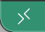

Install Visual Studio Code¶
Once you have a working ssh connection to your remote server, it is time to configure a more amicable way to work.
For that, we are going to use Visual Studio Code. The next section is a brief guide on how to do make it works, but you can read this link to get more details on how does it work and how to configure it.
Download and install VS Code¶
Look for the last version of VS Code, download and install it in your computer following the instructions in the site.
After that, open it and install the Remote Development extension pack by going to the “extension icon” highligthed in the image below
{kind=link}
then you will search for the extension named remote in the Marketplace, as shown in the figure below. You need to select and install it.
{kind=link}
Configure VS Code for working remote¶
Once the extension is installed, you need to click over the remote connection icon (1) and then select and click the Connect Current Windows to Host… option (2)
{kind=link}
By doing so you will be asked to enter the remote server credentials that you previously used to connect via PuTTY or Terminal, depending on your system (PC or MAC correspondly).
{kind=link}
Upload Publick Key (for PC)¶
If you are working over a Mac you already uploaded your public ssh key in a previous step. Hence you should get a successfull connection after you are asked to enter your passphrase.
Congratulations, you’re all setup! You can celebrate now.
PC¶
{kind=link}
After a few seconds you should get a successfull connection. Visual Studio code could open a unix terminal for you, or not. In the first case, you will see a screen similar to the one shown below.
{kind=link}
If you do not see a unix terminal, but instead you have this screen
{kind=link}
Then you need to open it manually by going to the menu and select Terminal->New Terminal.
Now you will proceed to setup your publick key in the remote server. For that you are going to create a new file named authorized_keys, change the permissions accordingly, edit the file and paste the public key.
create directory and file
mkdir -p ~/.ssh && touch ~/.ssh/authorized_keys
change permissions
chmod 700 ~/.ssh && chmod 600 ~/.ssh/authorized_keys
edit file
code ~/.ssh/authorized_keys
After you enter the last command, you will see that the editor will open an empty file (authorized_keys). You will need to copy and paste the public key that you generate using from PuTTYgen in a previou step in the process.
{kind=link}
save the file and close VS Code. Reopen it and re-stablish a remote connection following the previous steps (click the remote green icon  located at the left bottom corner and enter your credentials) .
{kind=link}
This time you should not be required to enter a password, but your passphrase for your public key. If everything is OK then you should login and be able to connect remotely.
Celebrate !¶
Congratulations, you did a good job configuring your remote environment. Now it is time to celebrate!
{kind=link}